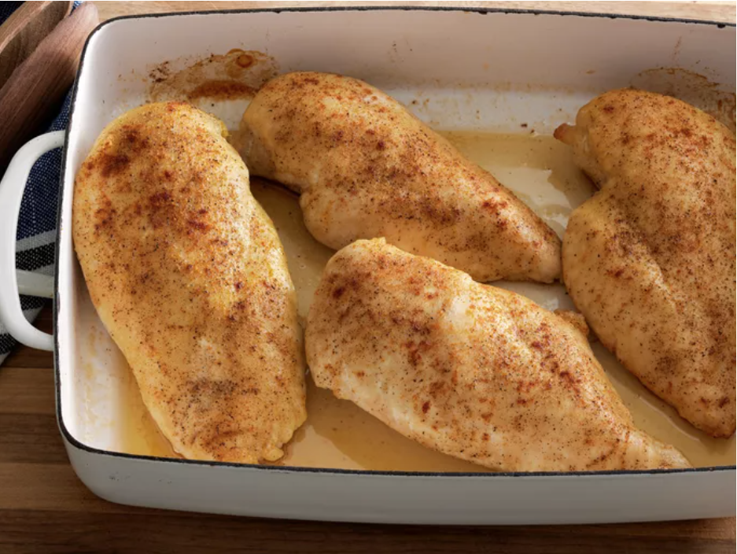

Learn how to bake chicken that's tender, juicy, and perfect every time with this simple, 5-ingredient recipe for boneless, skinless chicken breasts. Adding just a bit of chicken broth to those beautiful pan drippings creates a tasty pan sauce that adds extra flavor at the table.
Everyone needs a tried-and-true recipe for simple baked chicken in their back pocket. On the hunt for the perfect one? We've got you covered with this top-rated recipe for baked chicken breasts. It's versatile, universally crowd-pleasing, and (best of all) incredibly easy.